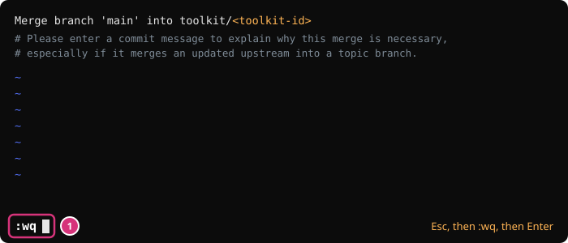
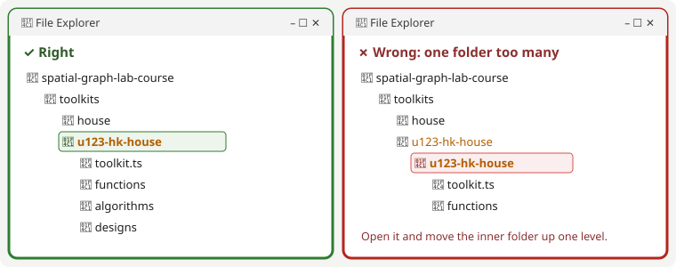
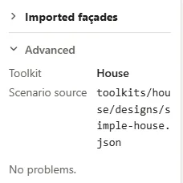

Page 16 of 16 · Help
When something goes wrong
Find your message below, open it, follow the fix. Nothing you did is lost: ask your tutor before trying commands from the internet.
Search for your error: press Ctrl+FCmd+F and type a few words of the first line of the message, such as rejected, GH007 or config. Or jump to a group:
With an AI assistant, the quickest fix is often to paste it the whole message and ask it to fix exactly that, inside your toolkit folder.
01Setting up
“…npm.ps1 cannot be loaded because running scripts is disabled on this system”
The terminal is PowerShell. You do not need to change Windows security settings.
- In the terminal panel, the arrow next to + › Select Default Profile › Command Prompt.
- Close the PowerShell terminal (bin icon), open a new one (Terminal › New Terminal) and run the command again.
Pictures: Install the tools › 06.
“'git' is not recognized…” / “command not found: node”
My GitHub verification email hasn't arrived
- Check your spam or junk folder.
- Check that the email address you entered is correct.
- Use GitHub's option to resend the verification email.
I downloaded Visual Studio, not Visual Studio Code
- Go back to the official VS Code download page.
- Download Visual Studio Code, the lighter code editor, not Visual Studio.
- Run the installer and open Visual Studio Code.
macOS asks me to install Command Line Tools
- Choose Install when prompted.
- Let the installation finish.
- Close and reopen Terminal and run
git --versionagain.
My Node.js version number is different from the example
That is normal: a version beginning with v for Node.js and a number for npm. The app needs Node.js v22.12 or newer.
No invitation, or “404” on the invitations page
- Check you are signed in to GitHub with the account whose username you gave your tutor.
- Look for the invitation e-mail (also in spam). Invitations expire after 7 days.
- Still none: send your tutor your exact GitHub username again. Go on meanwhile: only pushing needs it.
“The system cannot find the path specified.” when going to source\repos
The folder does not exist yet: make it first (Clone the repository › 03), then run the cd line again.
“fatal: destination path 'spatial-graph-lab-course' already exists…”
You cloned it before: use that folder (Clone the repository › 04). Cloned it into Documents earlier and changed nothing yet? Delete it and clone again in source\repos; with work in it, ask your tutor.
npm ci prints “npm ERR!” / “npm error”
- Check the terminal is in the course folder: it contains
package.json(below). - Check
node --versionis v22.12 or higher. - Run
npm ciagain. Slow Wi-Fi can take 10 minutes or more.
02The terminal, the folder and the app
“fatal: not a git repository…” / “Could not read package.json” / “ENOENT”
The terminal is in another folder.
- File › Open Folder… (or Open Recent) ›
spatial-graph-lab-course. - Open a new terminal (Terminal › New Terminal) and run the command again.
A command keeps running and the prompt doesn't come back
npm run dev keeps running on purpose. Open a second terminal with + for other commands, or press Ctrl+C to stop it (also on a Mac).
“Port 5173 is in use, trying another one…”
- The app already runs in another terminal: use that one, or stop it there with Ctrl+C and start it again.
- Or open the address this one printed (e.g.
http://localhost:5174/) wherever these pages saylocalhost:5173.
“This site can't be reached · localhost refused to connect”
The app is not running (or runs on another number).
- In the course folder's terminal run
npm run devand leave it running. - Open the exact
Local:address it prints.
A strange editor with ~ lines opened (Vim)
Don't panic. Git opened an editor for a message. Press Esc, type :wq and press Enter: the message is kept and git goes on.

:wq at the bottom (1), then Enter.A VS Code tab opened instead: close the tab. The course's commands use --no-edit so this should not happen.
The commands show an orange <your-toolkit-name>
These pages fill in your toolkit name once you made it on page 10, and remember it per address: a page opened by double-click and the online tutorial each keep their own. Make it there again, or type your toolkit name in place of the orange part in the terminal.
03Git and GitHub
“! [rejected] toolkit/… (fetch first)” or “Everything up-to-date” on my first push
Not your fault: someone in the class already has this name.
- Never pull it.
- Change your toolkit name a little on page 10.
- Run
git switch main, then make your branch again with the new name (page 10 › Make your branch).
Pushed this branch before yourself, from another computer? Then git pull --no-rebase --no-edit and git push.
If git says “Please tell me who you are” (or “Author identity unknown”)
Git puts a name and an e-mail on every commit. Tell it yours once per computer, then run your git commit again.
Use your GitHub username and your GitHub no-reply e-mail. The course repository is public: every commit shows its name and e-mail to anyone. The no-reply address keeps your real e-mail private.
- Get your no-reply e-mailOn GitHub: your picture (top right) › Settings › Emails › tick Keep my email addresses private. Copy the address that ends in
@users.noreply.github.com, such as12345678+hkent@users.noreply.github.com. - Type both here
Remembered only in this browser.
- Run the two commands, one at a time
git config --global user.name "<your-github-username>"
git config --global user.email "<your-no-reply-email>"
nothing printed. Then run your
git commitagain.
“remote: error: GH007: Your push would publish a private email address.”
Your commits carry your private e-mail.
- Set your no-reply e-mail (above).
- Fix the e-mail of your last commit:
git commit --amend --reset-author --no-edit, thengit push. - Still refused (several commits)? Ask your tutor.
“remote: Permission to … denied” / “The requested URL returned error: 403”
- Accept the course invitation (Install the tools › 02).
- Signed in as another GitHub account? Ask your tutor.
- Push again: it asks you to sign in (how).
“Username for 'https://github.com':” in a Mac terminal
Your GitHub password is not accepted there. Press Ctrl+C, then push from VS Code's terminal and allow VS Code to sign in (how).
“error: src refspec toolkit/… does not match any”
The branch name in your push does not exist on your laptop: a typo, or you never made it. git branch lists your branches; push exactly that name. Not made yet: page 10 › Make your branch.
“remote: error: GH013: Repository rule violations found for refs/heads/main.”
You are pushing main, the course's branch. Your work belongs on your branch: I committed on main.
“GH013 … Cannot create ref due to creations being restricted.”
The branch name does not start with toolkit/. Make the branch with exactly toolkit/<your-toolkit-name> (page 10).
“fatal: a branch named 'toolkit/…' already exists”
You made it before: go to it without -c: git switch toolkit/<your-toolkit-name>.
“fatal: invalid reference: toolkit/…”
No branch with that name on your laptop: a typo, or another name. git branch lists them; use exactly the name shown.
“fatal: Need to specify how to reconcile divergent branches.”
- On your branch: use
git pull --no-rebase --no-edit. - On main: you committed on main: below.
git status lists files outside my folder
Don't commit them. Put each one back, one at a time (the path as git status shows it). package-lock.json is the usual one:
git restore package-lock.json
Another file: if it is green (added), first take it out of the commit, then put it back:
git restore --staged <path-of-the-file> git restore <path-of-the-file>
A new file outside your folder (listed as untracked): delete it, or move it into your folder. Never git restore ., git reset --hard or git clean: they also wipe your toolkit.
A red ✗ on GitHub: “This branch changes files outside toolkits/…”
A commit contained files outside your folder (often package-lock.json). Put each file back to the course's version, on your branch:
- Get the newest course version first:
git pull --no-rebase --no-edit origin main - For each file the red message lists:(a file the course does not have is removed by it).
git restore --source=origin/main --staged --worktree <path-of-the-file>
git status: only those files are listed. Then commit and push:git commit -m "fix(<your-toolkit-name>): undo changes outside my folder"
git push
VS Code's Source Control committed everything (“stage all your changes”)
I committed on main
GitHub refuses to take it, so nothing is lost. Commit or put back anything git status lists first. Then bring the commits into your branch and put your main back to the course's. This is the one fix that switches branches: your commits are on main, so you go to your branch and merge them in.
git switch toolkit/<your-toolkit-name>
git merge --no-edit main
git branch -f main origin/main
git push
No branch yet (“invalid reference” on the first line)? Make it from your main instead:
git switch -c toolkit/<your-toolkit-name>
git branch -f main origin/main
git push -u origin toolkit/<your-toolkit-name>
A CONFLICT, or the commits changed files outside your folder: run git merge --abort and ask your tutor.
04Getting the course's updates
“CONFLICT (content): Merge conflict in …”
- Run
git merge --abort: your branch is back as it was. - Ask your tutor, with the message. Never edit files outside your folder to make it go away.
“error: Your local changes to the following files would be overwritten by merge:”
- You have changes that are not committed.
- Your toolkit's files: commit them. Other files: put them back (above).
- Run the command again.
05Your toolkit and its check
“FAILED: toolkit "…" has a problem (read the red message above).”
Scroll up to the first red Error: line: it says what is wrong. Copy the whole red message to your AI and ask it to fix exactly that inside your folder, then run the check again. Ignore vitest's “N passed” summary: only the last line counts.
“TypeError: Cannot read properties of undefined (reading 'config')”
An older check, started from a folder path with a lowercase drive letter (c:\…). Get the course's updates (how), or open a new terminal from VS Code (Terminal › New Terminal) and run the check there.
“No toolkit "…" was found.”
- The folder is missing or named differently: it must be
toolkits/<your-toolkit-name>/withtoolkit.tsdirectly inside, exactly your toolkit name, lowercase. - If the message names a folder to rename, rename it to exactly your toolkit name.
- Check the toolkit name you typed after
-t.
“toolkit.ts is one folder too deep”
The common unzip mistake: toolkits/u123-hk-house/u123-hk-house/toolkit.ts.
- Open the outer folder.
- Move everything inside the inner folder up one level.
- Delete the now empty inner folder.

“toolkit folder "…" must be lowercase letters…”
Rename the folder: lowercase letters, digits and -, starting with a letter: exactly your toolkit name.
My toolkit is not in Open toolkit design… or the Toolkit list
- Run the check:
npm run check:toolkit -- -t <your-toolkit-name>. It says what is wrong. - Check the address:
?toolkit=<your-toolkit-name>at the end.
A Function or algorithm is disabled
Select it, or read Project › Advanced, for the reason (usually an invalid field or a duplicate id). Paste it to your AI.

“… imports …” refused by a check
Toolkit code may import only @student-api and files in your own folder: no npm packages, nothing from lab/ or another toolkit. Paste the message to your AI.
An algorithm fails on the default design
Run it in the app on that design to see its message. Usually a missing value (null) or an empty list: paste the message to your AI.
The browser tab freezes
An endless loop in an algorithm. Close the tab, ask your AI to make every loop end, reopen.
Designs show “unknown Function” warnings
A Function was renamed or removed. Add it back (don't rename Functions), or fix the designs.
06AI assistants
The agent says I reached my usage limit, or asks for payment
Do not buy anything. Continue with any AI chat in the browser: page 12 (your branch and folder stay as they are). Copilot Free and GitHub Education are other options (Install the tools › 08).
The AI wants to change lab/, package.json, install a package, or run git reset --hard
Say no. The fix always belongs in your toolkit folder. If something cannot be done, ask it for the closest thing it can do inside your folder. Already changed? Put the files back one by one.
My chat refuses the zip file
- Unzip the kit and attach its
.mdfiles instead. - Or try another chat (claude.ai, chatgpt.com, gemini.google.com), or ask your tutor.
The chat gave code blocks, not a zip
Ask “Please give me the folder as a zip”. If it cannot, try another chat or ask your tutor.
07In the browser: projects and uploads
My project is gone
- Same browser on the same computer, not a private window?
- Look in the Welcome screen's recent projects.
- Otherwise open your last exported
.project.json(Open project). Export after every session.
The uploaded file is refused
- Check it really ends in
.ts, not.ts.txt(page 04). - Paste the app's whole message to the AI and ask it to fix exactly that.
“Stopped after … s — does it loop forever?”
It took too long. Ask the AI to make it simpler or to make every loop end.
My analysis is not in the section I expected
The section follows its input: none → Network, one node → Node, one edge → Edge, anything else → Queries.
“This file is an analysis … upload it in Analyse”
It only reads and shows: upload it in Analyse. In Analyse, a transform gets the opposite message.
The transform preview shows an error
Paste the app's whole message to the AI, then use ↻ (Replace) in Yours with the new file.
“customOf needs a Function from a toolkit's functions/ folder…”
Copy this sentence to the AI as it is: “Read the fields with ctx.nodeCustom(nodeId) instead of ctx.customOf.”
Apply is greyed out: “The design has changed since this preview was computed”
You edited the design after Run: press Run again.
08Still stuck?
Ask your tutor or in the workshop Slack channel, in a thread, with: what you did, your operating system, the page and step, the whole message (copied, not a photo), your branch name and the output of git status. Never post passwords, API keys, tokens or sign-in codes.